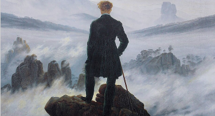

¿Para qué preguntar?
Filosofar, para qué
Pável Granados
Sección: Aula Abierta



En una ocasión, Jacques Lacan, el gran psiquiatra francés, dijo, en una conferencia en la Universidad de Lovaina, Bélgica: “Nos hacemos preguntas cuyas respuestas ya conocemos, y eso limita mucho el alcance de las preguntas”. Es algo muy profundo pues parece que ya sabemos qué queremos que nos respondan, o ya sabemos qué queremos demostrar con nuestra pregunta. Además, hay algo grave: cada que preguntamos algo, descubrimos ante los demás algo de nosotros. Cuando nos damos cuenta de que preguntar es una manera de desnudarnos, se vuelve una actividad algo inquietante y quizás hasta valiente.
“El filósofo alemán Walter Benjamin,
escribió un bello texto que se llama
“Experiencia”, en 1913, en que medita
sobre esta situación.”

El mundo cotidiano nos presenta las cosas ante nosotros, y muchas veces no tenemos
manera de preguntarle qué tiene detrás, cómo está hecho en realidad… Al comenzar los
estudios y al preguntarle a un adulto sus opiniones y respuestas sobre la vida,
nos revestía cierta temeridad, había que prestar atención porque seguramente íbamos
a recibir una respuesta determinante para la existencia. El filósofo alemán Walter
Benjamin, escribió un bello texto que se llama “Experiencia”, en 1913, en que medita
soesta situación. Dice que la “Experiencia” es la máscara del adulto, inexpresiva e
impenetrable, no se puede ver qué tiene detrás. Y cuando habla de la vida es para
decir que ya lo ha experimentado todo, que ya fue joven, que ya tuvo ideales, y que
conoció el amor y la esperanza:
“Quizás tenga razón. ¿Cuál es nuestra réplica? Aún
no hemos experimentado nada. Pero intentemos quitarnos la máscara. ¿Qué ha experimentado
este adulto? ¿Qué quiere demostrarnos? Esto, sobre todo: él también fue joven; él
también quería lo que nosotros queríamos; él también se negó a creer a sus padres,
pero la vida le ha enseñado que tenían razón.”
Y así como me pasó a mí, les pasará
a ustedes, dice ese adulto inexpresivo. Dice más o menos algo así: “Ahora son jóvenes,
llenen su juventud de éxtasis, porque después vendrá la era de la monotonía, de
compromisos y de ideas empobrecidas.”
Pieza de la artista rusa Olesya Denisova. Inspirada en las célebres pinturas de Mark Rothko.
Bueno, ¿qué responderle a esta voz solemne y hueca? Ésta es la respuesta de Walter Benjamin: El secreto está en que esa máscara nunca alza la vista, lo que nos dice no es más que el mensaje de la cotidianidad de la vida. ¿Y los que seguimos disfrutando de todo? Se debe a que hay valores inexperimentables. Qué lástima el adulto que tiene la máscara de la experiencia, nada más conoce la experiencia, nunca ha experimentado lo extraordinario. Visto así, ya no veremos en la experiencia solamente desesperanza. Ya no andaremos, como dice Benjamin, dando golpes perezosamente contra las rocas, al igual que las olas.
Y miren esta otra bella frase: “Para quien se esfuerza, la experiencia puede ser dolorosa, pero difícilmente lo llevará a la desesperación.”
Existe una pregunta –escribió Fédor Dostoyevski, en su novela Demonios– que se encuentra en cada uno de los átomos del Universo desde el día de su creación: la pregunta “¿por qué?” Así, tan chiquita, es la pregunta más grande de todas. No es que no tenga respuesta, los seres humanos han creado la escala de las causas y de los efectos, y han subido por ella, creando categorías. Hay sistemas de preguntas que buscan cómo construir o cómo destruir lo construido. Estamos siempre en proceso de construcción de una respuesta.
Henri Cartier-Bresson, Albert Camus, 1944
La filosofía cuestiona las verdades eternas, las verdades sabidas, las verdades autorizadas. De hecho, la Filosofía es la gran enemiga del sentido común, de las verdades consensuadas. Todo está en discusión, a la cual no hay que temer. Otra pregunta que nos podemos hacer es: ¿La Filosofía construye o destruye? Hegel, a mediados del siglo XIX, dijo: La Filosofía supera. Es decir: destruye conservando. ¿Queremos destruir una sociedad injusta? Esa sociedad tiene elementos que pueden ser útiles, así que se pueden conservar. Una nueva sociedad puede reconfigurar los elementos que la vieja sociedad tenía. La medicina, la tecnología, la igualdad política… pueden tener aspectos que sirvan a una sociedad más justa.
¿Recuerdan el antiguo mito griego de la Medusa? Una de las tres gorgonas, cuyo rostro era tan monstruoso que convertía en piedra a quien la miraba. Perseo fue el elegido para ir a matarla hasta su cueva y cortar su cabeza para llevarla hasta su pueblo y liberarlo. Como no podía mirarla a los ojos, Perseo la miró indirectamente, poniendo su escudo como un espejo, y cuando la tuvo en la mira… la decapitó con su espada. De las gotas de la cabeza de la Medusa, nació Pegaso, el hermoso caballo alado.
Los viejos mitos dicen algo que hemos olvidado. Italo Calvino (en su libro Seis propuestas para el próximo milenio), cuando leyó esta historia, extrajo de ella una enseñanza: la Medusa es la vida cotidiana, la rutina de todos los días que miramos a los ojos y convierte en piedra nuestro espíritu. Sólo podemos decapitarla mirándola a través de un espejo, es decir: el arte, que refleja la vida. Sólo así, con el arte, podemos mirar indirectamente a la Medusa y matarla. De su sangre caída en la tierra, nace Pegaso, es decir: el arte, el caballo alado que remonta la vida diaria.
Edvard Munch, Retrato de Friedrich Nietzsche, 1906

El arte representa la vida (no tenemos conciencia si nos la hacen ver) y la Filosofía se propone explicarla, pero también cambiarla. Muchas veces el arte es indiferente ante nosotros, tenemos que preguntarle algo para que deje su impasibilidad y nos diga algo. La realidad necesita ser interrogada. Por ejemplo, Charles Darwin llegó a su Teoría de la Evolución a partir de algunas cuantas preguntas. Cuando viajaba en su carruaje por largas distancias se dio cuenta de que el paisaje iba sufriendo cambios, aparecían plantas nuevas, dejaba de ver ciertos animales… ¿por qué? La vida es una continua lucha por la existencia. El clima, el suelo, el agua, todos son factores que determinan el éxito o el fracaso. Hay mosquitos que no pueden llegar hasta ciertas alturas, por lo que no hay algunas enfermedades a partir de ese nivel, etc.
¿Es bueno abrir la puerta a todas las preguntas?, ¿se debe de cuestionar todo? Si esto es así, los valores de la vida se podrían cuestionar siempre, y podríamos destruirlos por completo. Antiguamente, para que no hubiera confusión en los valores sociales, sólo unos cuantos podían tener el control de las verdades. El pueblo no debía leer las Escrituras (y en muchos casos ni siquiera podía, porque estaban en latín), esto fue posible sólo hasta que Lutero luchó en el siglo XVI por la lectura directa de La Biblia: la tradujo al alemán, y con ello inició la literatura alemana.
Sí, si se cuestionan todos los valores, quizá no haya modo de que nada quede en pie. Ése es el Nihilismo, una forma de pensamiento que viene desde la antigüedad, cuando algunos filósofos griegos decían que daba igual vivir que morir (pero no hacían nada para morirse, sólo aconsejaban a los demás que no vivieran). Si cuestionamos todo, podemos alcanzar pretexto para no creer en nada… De hecho, eso pensaba Friedrich Nietzsche pensaba que no hay un mundo verdadero, que nuestra cultura es “como un río que quiere llegar a su fin”.
Nuestra época es resultado del Nihilismo: la razón ha podido cuestionar y destruir toda propuesta de valores. Lo podemos ver en el arte: las vanguardias han ido destruyendo la forma, la figura, el color, el bien, el mal. Los cuadros de Mark Rothko parecen paisajes de mares muertos, ventanas que no miran a ninguna parte, paisajes de un mundo sin futuro. Pero son cuadros bellísimos. Esperando a Godot es la obra de teatro en que dos personajes esperan a Godot, quien nunca llega. Es tarde, y sólo ven un mundo que se acaba. Al final ambos acuerdan irse, sin embargo, no se mueven y permanecen en su lugar.
Hay optimistas que les dicen a estos dos artistas: se acaba tu mundo, . pero es que viene otro mejor. Se acaba tu mundo burgués. Vendrá un amanecer.
Algo así dice Nietzsche: “Alabo, no reprocho, la llegada del nihilismo. Creo que es una de las mayores crisis, un momento de profunda introspección para la humanidad. Que el hombre se recupere, que domine esta crisis, es cuestión de su fuerza. Es posible...”
Era la Francia de Vichy (1940-1942), es decir: la Francia que colaboró con Hitler y que persiguió a los luchadores sociales y emitió leyes contra la comunidad judía. Fue entonces que apareció El extranjero, la primera novela de Albert Camus (1913- 1960). Quizás era más urgente entonces la Guerra Mundial que la literatura. Pero Meursault, el personaje que protagoniza esta pequeña obra ha despertado inquietud, incluso: horror. Es un joven que recibe la noticia de la muerte de su madre con absoluta indiferencia. Una indiferencia que saca de quicio a las personas que se encuentran a su alrededor. Por accidente, mata a un árabe en la calle. Todo lo hace porque sí, sin interés, sin emoción. Y cuando es juzgado y las autoridades saben que su madre acaba de morir, los aterroriza más su indiferencia que su crimen. Lo condenan a muerte porque no conciben su desinterés. El sacerdote que lo va a confesar lo aburre con sus palabras sobre Dios. “Me quedaba poco tiempo. No quiero perderlo con Dios”.
Cuando Meursault explota, indignado por las palabras del sacerdote que le dice que está con él, grita:
“Qué me importaban la muerte de los otros, el amor de una madre, qué me importaba su Dios, las vidas que uno escoge, los destinos que uno elige, puesto que un solo destino debía de elegirme a mí…”
Meursault ha inquietado a millones, pero creo que no es un héroe, sino una víctima del absurdo. Es decir, de la vida que reduce sus posibilidades y nos encierra, Finalmente, eso es el absurdo para Camus: la vida que se vuelve rutinaria, una vida que nos asfixia, y al final no podemos responderle nada. No tenemos respuestas para las grandes preguntas que se nos presentan.
La Filosofía y el Arte han destruido valores que durante siglos se habían creído firmes. Construir valores y ponerlos a prueba, parece el reto de nuestra era. Meursault afligía a mis compañeros de la Prepa, cantaban Killing an Arab, de The Cure, nos vestíamos de negro. Nos dominaba la Nada.
Albert Camus fue un poco extraño políticamente: se opuso a la independencia de Argelia, su tierra natal.
Pero su novela El extranjero fue influyendo en el mundo. Por alguna razón, hoy es una lectura de juventud.
Quizá porque a las juventudes de hoy les ha tocado más desasosiego en el mundo, y quisieran construir algo.
Pero Camus, a pesar de todo, parece un pensador optimista. No creo que haya simpatizado con su personaje.
A pesar de la depresión que sigue a la lectura de esta novela, el Existencialismo es un “Sí”
decidido a la vida. ¿En qué consiste?
Si bien hemos sido arrojados a la vida, hemos continuado aquí por pura inercia.
Un día, por alguna razón, tomamos conciencia de que estamos vivos. Ésa es la verdadera disyuntiva de
la existencia: a partir de entonces, vivir ya no es una inercia que veníamos siguiendo, sino una
decisión. Por la razón que sea, seguimos vivos, es cuestión de interrogarnos. Pero esa razón es
suficiente, con ella es con la que tenemos que comprometernos. Construir sobre la decisión de
vivir. Cada momento vivos es una decisión y un compromiso. Sobre cada momento se puede construir
una verdad y un motivo, un monumento artístico, un ideal.
Entonces, las preguntas despejan el mundo, para poder construir, siempre preguntando.